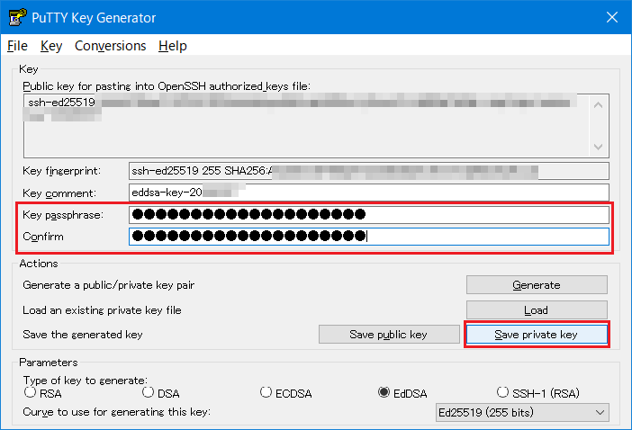
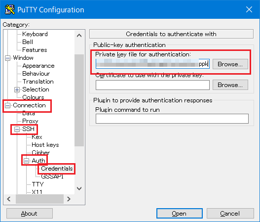
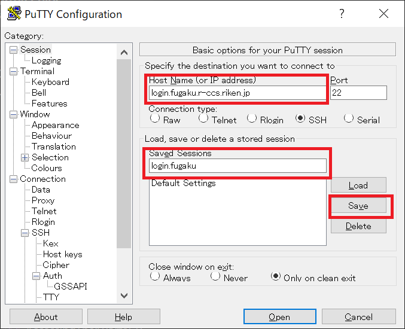
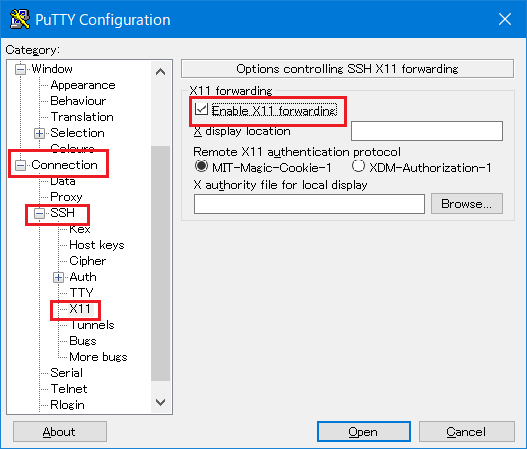
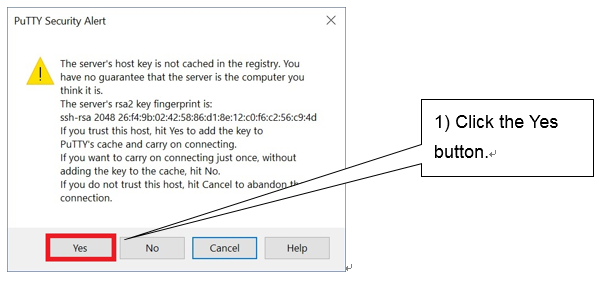

4.4. ログイン¶
ローカルアカウントを使用して「富岳」へログインするには、ログインノードにSSH Version2（公開鍵認証）でログインします。
事前に利用者の端末にてSSHの鍵ペア（公開鍵と秘密鍵）を作成し、公開鍵を富岳ウェブサイト画面から登録してください。 登録するのは公開鍵のみです。秘密鍵が登録された場合、安全対策としてログインの一時停止等の処理を実施する場合があります。
注釈
ログインノードのホームディレクトリ配下の次に示すディレクトリ、および、ファイルのパーミッションを変更するとsshでログインできなくなります。
ホームディレクトリのパーミッション（700）
~/.ssh ディレクトリのパーミッション（700）
~/.ssh/authorized_keys のパーミッション（600）
これらのパーミッションを変更しないように注意してください。
4.4.1. 鍵ペア（秘密鍵／公開鍵）の作成¶
「富岳」を利用する場合は利用者端末で秘密鍵と公開鍵のペアを作成します。生成する鍵の種類は次のいずれかを推奨します。
Ed25519
ECDSA（NIST P 521）
RSA（鍵長 2048bit以上）: RSA鍵の利用は富岳ウェブサイトの「ログインノードのsshアクセスに関する運用変更」も参照ください。
UNIX／Linux（OpenSSH）およびWindows（puttygen）を使用したEd25519の鍵ペア（公開鍵／秘密鍵）の作成手順を示します。puttygenを使用する場合には、ターミナルエミュレータPuTTY（パティ）を事前にインストールする必要があります。
4.4.1.1. Unix／Linux／Mac (OpenSSH)¶
利用者の端末にて ssh-keygenコマンドを実行し、秘密鍵と公開鍵のペアを作成します。
ターミナルを起動して、ssh-keygenコマンドを実行します。
Mac（OS X）の場合は、Terminal（）を起動してssh-keygenコマンドを実行します。
UNIX／Linuxの場合は、端末エミュレータを起動して ssh-keygenコマンドを実行します。
[terminal]$ ssh-keygen -t ed25519 Generating public/private ed25519 key pair. Enter file in which to save the key (/home/username/.ssh/id_ed25519): Enter passphrase (empty for no passphrase): # パスフレーズを入力 Enter same passphrase again: # もう一度同じパスフレーズを入力 Your identification has been saved in /home/username/.ssh/id_ed25519. Your public key has been saved in /home/username/.ssh/id_ed25519.pub. The key fingerprint is: SHA256:khbWyIyUqMnyjK1Ok78l8EivKbQLNgP3vyhjYBgvif8 namehostname The key's randomart image is: +--[ED25519 256]--+ | ... | | ...+ o | |.o . * . | |=. . o | |=@ + S | |@o% . . | |=%.= . | |*=O = | |+=+=Eo. | +----[SHA256]-----+注釈
パスフレーズはパスワード同様に他人が推測しにくい文字列を設定してください。また、必ずパスフレーズを設定するようお願い致します。パスフレーズの長さは15文字以上を推奨します。
- ssh-keygenを実行すると、ホームディレクトリ配下の
.sshディレクトリに秘密鍵（id_ed25519）と公開鍵（id_ed25519.pub）の2種類が作成されます。公開鍵（id_ed25519.pub）を富岳ウェブサイトを利用して登録します。
4.4.1.2. Windows (PuTTYgen)¶
PuTTY／WinSCPで利用可能な秘密鍵／公開鍵を puttygenにより作成します。
- puttygenを起動します。鍵の種類（Type of key to generate）として「EdDSA」を選択し「Ed25519 (255 bits)」カーブを選択し、 「Generate」ボタンをクリックします。
マウスカーソルをランダムに動かします。

- 公開鍵を保管します。「Public key for pasting in to OpenSSH authorized_keys file:」に表示される内容を、クリップボードにコピーします（メモ帳を起動し貼り付けておくことをお勧めします）。クリップボードに張り付けた内容（公開鍵となります）を、富岳ウェブサイトを利用して登録します。

「Key passphrase」および「Confirm passphrase」に、パスフレーズを入力します。入力後、「Save private key」ボタンをクリックし、秘密鍵を保管します。パスフレーズは、ログインノードへのログイン時に入力を求められますので、忘れないようにしてください。
 注意
パスフレーズはパスワード同様に他人が推測しにくい文字列を設定してください。また、必ずパスフレーズを設定するようお願い致します。パスフレーズの長さは15文字以上を推奨します。
秘密鍵を保管するファイル名を「ファイル名(N)」に入力し、「保存(S)」ボタンをクリックします。秘密鍵が保管されます。

4.4.2. 公開鍵登録¶
4.4.2.1. 富岳ウェブサイトを利用した登録¶
富岳ウェブサイト（https://www.fugaku.r-ccs.riken.jp/）にログインし、メニューから[利用者ポータル]をクリックします。
メニューから[Publickey registration]をクリックします。
「Publickey Registration」欄に利用する公開鍵をコピー＆ペーストします。
[Register]ボタンを押します。
内容を確認のうえ[Register]ボタンを押します。

「Registration has been completed.」の画面が表示されると、公開鍵の登録作業は終りです。

注釈
公開鍵は1回の操作で1個しか登録できません。2回目以降の操作では、追加登録となります。2個以上の公開鍵を登録したい場合には、同様の操作を繰り返してください。
公開鍵が正しくない場合はエラーメッセージが表示されます。公開鍵を確認して再度登録処理を実行してください。

4.4.2.2. 公開鍵の追加登録¶
ログインノードで
~/.ssh/authorized_keysを編集します。
[_LNlogin]$ vi ~/.ssh/authorized_keys [i] キーを押下し、vi エディタのインサートモードにします マウスの右クリックを押下し、.ssh/id_ed25519.pubの内容を貼り付けます [esc] キーを押下し、[wq!] を入力し、[Enter] キーを押下します
公開鍵を登録した
authorized_keysのパーミッションを変更します。
[_LNlogin]$ chmod 600 ~/.ssh/authorized_keys
4.4.3. アクセス方法¶
4.4.3.1. ログインノード¶
利用者の端末から、次のホスト名でアクセスします
ホスト名：login.fugaku.r-ccs.riken.jp
sshコマンドの実行例を示します。
【公開鍵認証】
[terminal]$ ssh username@login.fugaku.r-ccs.riken.jp
The authenticity of host 'XXXXXX (nnn.nnn.nnn.nnn)' can't be established.
XXXXX key fingerprint is XX: XX: XX: XX: XX: XX: XX: XX: XX:XX:XX:XX:XX:XX:XX:XX.
Are you sure you want to continue connecting (yes/no)? yes # yesを入力（初回）
Enter passphrase for key '/home/groupname/username/.ssh/id_ed25519': # パスフレーズを入力
[_LNlogin]$
初回ログイン時、ホスト鍵の登録について、確認のメッセージ（Are you sure you want to continue connecting）が表示されます。「yes」を入力します。
ログインノードへの接続時に X11 Forwarding 機能を有効とする場合は、sshのオプション
-Xを指定してください。ログインノードへの接続時に SSH Agent-forwarding 機能を有効とする場合は、sshのオプション
-Aを指定してください。複数台のログインノードを運用しています。ホーム領域（
/home）、データ領域（/vol0n0m/data）は、各ログインノードで共用します。また、言語ソフトウェアの環境も同じです。
注釈
鍵ペアの作成時に鍵ファイルのファイル名を入力して作成した場合は、sshコマンドの-iオプションで鍵ファイルのファイル名を指定してください。
[terminal]$ ssh -i key_filename username@login.fugaku.r-ccs.riken.jp
4.4.3.2. ログインノード（PuTTY）¶
Windows（PuTTY）を使用して、ログインノードにログインする方法を示します。
- PuTTYを起動します。利用者の端末に保管されている秘密鍵を設定します。から「Browse」ボタンをクリックします。puttygenで作成した秘密鍵を選択します。

- 「Session」を選択します。「Host Name(or IP address)」に、ログインノードのホスト名
login.fugaku.r-ccs.riken.jpを入力します。設定した内容を保管するため、「Saved Sessions」に保管する名前を入力し、 「Save」ボタンをクリックします。2回目以降のログイン時は保存した名前を選択し、「Load」ボタンをクリックします。

ログインノードへ接続時にX11 forwarding 機能を有効とする場合は「Open」をクリックする前にを開き「Enable X11 forwarding」にチェックを入れてください。

ログインノードへ接続時にAgent-forwarding 機能を有効とする場合は「Open」をクリックする前にを開き「Allow agent forwarding」にチェックを入れて下さい。

{kind=link}
{kind=link}
{kind=link}
{kind=link}
{kind=link}
「Open」ボタンをクリックします。ログインノードへの接続が開始されます。
初回ログイン時、ホスト鍵の登録について、確認画面が表示されます。「はい(Y)」をクリックします。

ローカルアカウント名とパスフレーズを入力し、ログインノードにログインします。
login as: username # ローカルアカウント名を入力 Authenticating with public key "imported-openssh-key" Passphrase for key "imported-openssh-key": passphrase # パスフレーズを入力 Last login: Tue Mar 27 09:57:12 2018 from xxx.xxx.xxx.xxx login$
4.4.3.3. ログインノードを直接指定する方法¶
ログインノードへのアクセスとしてlogin.fugaku.r-ccs.riken.jpをご利用いただいております。
本ホスト名でつながりにくい場合、個別にログインノードを指定してアクセスしてください。
ログインノードを直接指定する場合は以下のホスト名をご利用ください。
login1 : login1.fugaku.r-ccs.riken.jp
login2 : login2.fugaku.r-ccs.riken.jp
login3 : login3.fugaku.r-ccs.riken.jp
login4 : login4.fugaku.r-ccs.riken.jp
login5 : login5.fugaku.r-ccs.riken.jp
login6 : login6.fugaku.r-ccs.riken.jp
4.4.3.4. Armログインノード¶
ArmログインノードはArmv8ベースのArmプロセッサを搭載したログインノードです。
Armログインノードは通常のログインノード(Interl製CPUを利用)を経由してログインします。 インターネットからArmログインノードに直接ログインすることはできません。
ログインノードからssh arm1を実行してログインしてください。
ログインノードとArmログインノードの間はホストベース認証を行うため、利用者による認証は不要です。
[_LNIlogin]$ ssh arm1
Last login: XXX MMM DD HH:MM:SS 2020 from 10.4.254.NN
[_LNAlogin]$
Armログインノードは次のように設定しています。
ホーム領域、データ領域は他のログインノードと共通です。ただしNFSマウントになります。
pjsub、pjstatなどは利用できません。
インターネットに直接アクセス可能です。Proxyの設定は不要です。
コンパイラはArm社コンパイラとLLVM10.0.0(asisでビルドしたもの)をインストールしています。
コンパイラ利用時は
module availでモジュールファイルを確認し適宜環境設定をして利用してください。
4.4.4. ファイル転送方法¶
login.fugaku.r-ccs.riken.jpを使用できます。4.4.4.1. ファイル転送（sftp）¶
sftpコマンドの実行例
[terminal]$ sftp username@login.fugaku.r-ccs.riken.jp Enter passphrase for key '/home/groupname/username/.ssh/id_ed25519': # パスフレーズを入力 sftp>
ファイル転送例（put）
sftp> put a.f90 Uploading a.f90 to /home/groupname/username/a.f90 sample.f90 100% 18 0.0KB/s 00:00 sftp>
ファイル転送例（get）
sftp> get sample.sh.o9110 Fetching sample.sh.o9110 to /home/groupname/username/sample.sh.o9110 sample.sh.o9110 100% 18 0.0KB/s 00:00 sftp>
4.4.4.2. ファイル転送（scp）¶
scpコマンドの実行例を示します。（端末からログインノードへ）
[terminal]$ scp local_file username@login.fugaku.r-ccs.riken.jp:remote_file Enter passphrase for key '/home/groupname/username/.ssh/id_ed25519': # パスフレーズを入力 [terminal]$
scpコマンドの実行例を示します。（ログインノードから端末へ）
[terminal]$ scp username@login.fugaku.r-ccs.riken.jp:remote_file local_file Enter passphrase for key '/home/groupname/username/.ssh/id_ed25519': # パスフレーズを入力 [terminal]$
4.4.4.3. Windows (WinSCP)¶
Windows系の場合、WinSCPなどのファイル転送プログラムを使用して、ログインノードへファイルを転送します。WinSCPでの接続例を示します。
WinSCPを起動し、[New Site]を選びます。
「Host name」にログインノードのホスト名（
login.fugaku.r-ccs.riken.jp）を入力します。「User name」にユーザ名を入力します。
[Advanced...]をクリックします。
{kind=link}
[Authentication]の「Private key file」にputtyの秘密鍵ファイル名を設定し、[OK]をクリックします。
{kind=link}
「Save」をクリックし、設定値を保存します。

７. 保存した設定値を選択し、「Login」をクリックし接続します。

接続完了後、エクスプローラに似た画面が表示され、ファイルをドラッグ＆ドロップして転送できるようになります。
4.4.5. ログインシェル¶
ログインシェルは /bin/bash です。
4.4.6. 「富岳」運用情報のメール配信¶
下記の運用情報に関するメールを配信します。配信内容は順次拡充します。
システム障害の影響を受けたジョブ情報
お知らせ情報
その他
【メールアドレスの登録方法】
ユーザのホームディレクトリに「.forward」ファイルを作成し、転送先のメールアドレスを記載してください。
「.forward」の記載例やフィルタリングの設定例などはFAQを確認してください。
[_LNlogin]$ vi ~/.forward
*****@*****.com